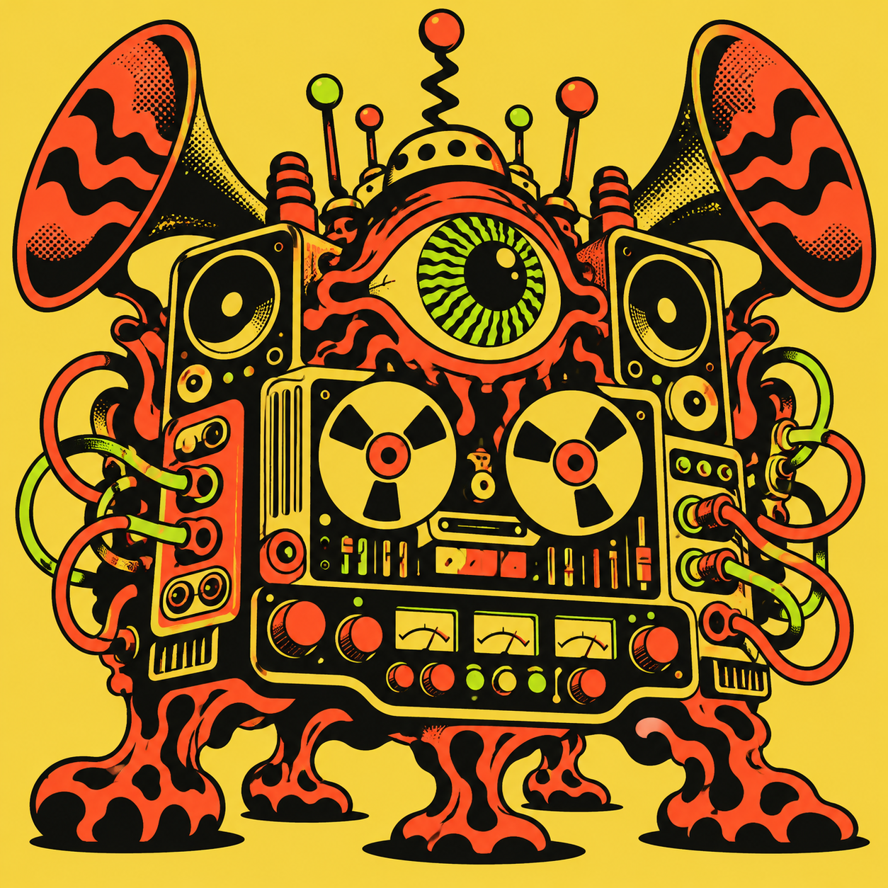

02 / THE RECORDS
A good place to get lost.
ANYWHERE
An open-eared archive across eras and traditions. Pick a name. Pull a thread.

250 releases outside the ordinary.
Find your way in.
From the Wire’s original outliers to new discoveries championed by The Wire, The Quietus and Bandcamp Daily.
One record.
Another world.
TAKE A DETOUR / BROWSE BY GENRE
Start with a sound.
See where it takes you.
Choose your adventure
Choose a weirdness level, then click Surprise Me to open an unheard release.
1 / CHOOSE A LEVEL
Your archive filters apply. Your chosen level also tunes The Machine Says.
FOLLOW THE SIGNAL
250 releases. Keep looking.
02 / THE RECORDS
An open-eared archive across eras and traditions. Pick a name. Pull a thread.
THE MACHINE / LINER NOTES
Weird Music Machine began with The Wire’s 100 Records That Set the World on Fire (While No One Was Listening) and its 30 runners-up. The archive now holds 250 releases, with 120 additions from 1999–2026 selected through The Wire, The Quietus and Bandcamp Daily.
Albums, compilations, singles and individual recordings all belong here. Researched genres, styles and traits help you find a way between them.
Your listening log stays in this browser. Every connection comes from the collection’s existing metadata. The 1–5 musical scores are interpretive guides.
Shared styles carry 45% of pair similarity, traits 28%, and genres 15%. Similar weirdness contributes 6%, intensity 4%, and accessibility 2%. Within each category, more shared tags and fewer unmatched tags mean a closer connection.
A 5-star rating contributes twice as much positive influence as 4 stars. Three stars are neutral. One- and two-star records push down candidates whose total pair similarity is at least 0.35 and which share musical metadata. One star has the stronger negative effect.
Heard records and records with unresolved musical scores are excluded from recommendations. Recommendations use a stable catalog order to break ties. With no positive ratings, the machine offers a varied discovery rotation or avoids strong matches to low ratings. Surprise Me randomly picks an unheard release that matches your filters. With “Any weirdness,” unresolved records can be picked; a specific weirdness band requires a known matching score.
The weirdness buttons select score bands: Familiar 1–2, Strange 3, Far Out 4, Completely Unhinged 5. “Any weirdness” opens the whole range. These discovery settings combine with collection filters.